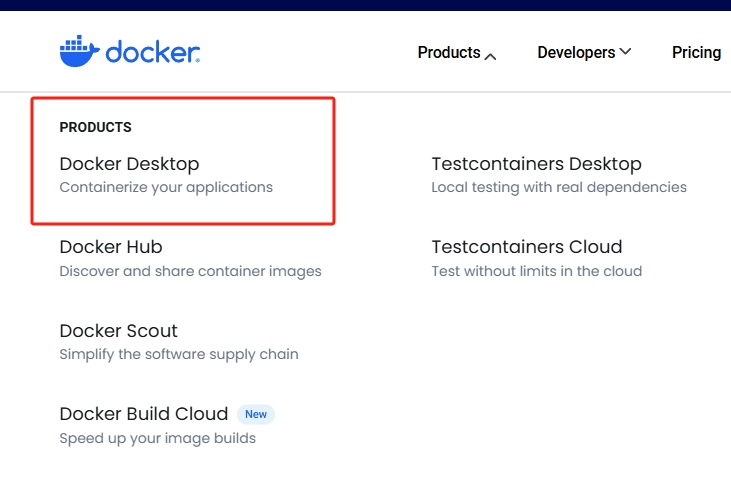

Docker初体验
Docker 是什么
Docker 是一个应用打包、分发、部署的工具
你也可以把它理解为一个轻量的虚拟机，它只虚拟你软件需要的运行环境，多余的一点都不要，
而普通虚拟机则是一个完整而庞大的系统，包含各种不管你要不要的软件。
跟普通虚拟机的对比
| 特性 | 普通虚拟机 | Docker |
|---|---|---|
| 跨平台 | 通常只能在桌面级系统运行，例如 Windows/Mac，无法在不带图形界面的服务器上运行 | 支持的系统非常多，各类 windows 和 Linux 都支持 |
| 性能 | 性能损耗大，内存占用高，因为是把整个完整系统都虚拟出来了 | 性能好，只虚拟软件所需运行环境，最大化减少没用的配置 |
| 自动化 | 需要手动安装所有东西 | 一个命令就可以自动部署好所需环境 |
| 稳定性 | 稳定性不高，不同系统差异大 | 稳定性好，不同系统都一样部署方式 |
打包、分发、部署
打包：就是把你软件运行所需的依赖、第三方库、软件打包到一起，变成一个安装包
分发：你可以把你打包好的“安装包”上传到一个镜像仓库，其他人可以非常方便的获取和安装
部署：拿着“安装包”就可以一个命令运行起来你的应用，自动模拟出一模一样的运行环境，不管是在 Windows/Mac/Linux。
下载&安装docker
下面是桌面版链接,点击下载
https://www.docker.com/products/docker-desktop
推荐下载这个
下载完后是个exe文件,点开后开始安装
我们在安装完成后可能会遇到这个报错

这是因为我们没开启虚拟化,如果你下载过Linux虚拟机应该就不会有这个错误,同时我们还要下载Linux子系统,跟着引导来就好
解决方法：
控制面板->程序->启用或关闭 windows 功能，开启 Windows 虚拟化和 Linux 子系统（WSL2)
要确定BIOS支持虚拟化
添加镜像源
我们如果每次都到docker官方去获取镜像,那么没有魔法就会非常慢,所以我们可以添加镜像源

可用的国内镜像源如下.可以添加多个镜像源
| 镜像加速器 | 镜像加速器地址 |
|---|---|
| Docker 中国官方镜像 | https://registry.docker-cn.com |
| DaoCloud 镜像站 | http://f1361db2.m.daocloud.io |
| Azure 中国镜像 | https://dockerhub.azk8s.cn |
| 科大镜像站 | https://docker.mirrors.ustc.edu.cn |
| 阿里云 | https://ud6340vz.mirror.aliyuncs.com |
| 七牛云 | https://reg-mirror.qiniu.com |
| 网易云 | https://hub-mirror.c.163.com |
| 腾讯云 | https://mirror.ccs.tencentyun.com |
用docker安装软件
我们可以下载个redis玩玩
下载Redis镜像
打开命令提示符（CMD）或PowerShell，然后使用以下命令从Docker Hub下载官方的Redis镜像：
|
|
这将下载最新版本的Redis镜像。你也可以指定版本号来下载特定版本的Redis镜像，例如：
|
|
运行Redis容器
下载完成后，你可以使用以下命令来启动一个Redis容器：
|
|
这里的参数解释如下：
--name my-redis：为容器指定一个名称，这里是my-redis。-d：表示以分离模式运行容器,在后台运行。-p 6379:6379：将容器的6379端口映射到宿主机的6379端口，这样你就可以通过宿主机的6379端口访问Redis服务。
验证Redis服务
为了验证Redis服务是否正常运行，你可以使用以下命令连接到Redis容器：
|
|
这将打开一个Redis命令行接口。你可以在这里输入Redis命令来测试服务，例如：
|
|
如果服务正常运行，你应该看到输出PONG。
我们可以在docker的终端上打开redis并使用


停止和删除容器
当你完成测试并想要停止Redis容器时，可以使用以下命令：
|
|
要删除容器，可以使用：
|
|
如果你想要强制删除正在运行的容器，可以添加-f参数：
|
|
配置Redis密码（可选）
如果你需要为Redis设置密码，可以在运行容器时通过环境变量REDIS_PASSWORD来设置。例如：
|
|
这将设置Redis的密码为mypassword。之后，你需要使用这个密码来连接到Redis服务。
制作自己的镜像
我们可以把自己的项目打包成一个镜像,让这个镜像在别的电脑上不配环境就能跑起来
下面是springboot项目的制作镜像案例
在制作镜像的时候,我们要先写一个dockerfile,这个dockerfile怎么写可以直接问AI
SpringBoot的dockerfile
|
|
这个文件就跟src和pom.xml坐一桌(放一块)就行了

然后我们就可以通过下面的命令来制作这个docker镜像
|
|
test是镜像的名称,v1是版本号
然后我们可以在本地跑一下这个镜像
|
|
–name test-hello指的是容器的名称是test-hello,后面跟的是要跑的是什么镜像的什么版本
多容器通信
多容器通信的意义
-
在Docker中，多容器通信是指多个容器之间能够相互发现并进行数据交换的能力。
-
这种通信机制在构建微服务架构和分布式应用时尤为重要，因为它允许不同服务之间高效地协作。
-
Docker提供了多种网络模式来实现容器间的通信，包括桥接网络（Bridge）、主机网络（Host）、覆盖网络（Overlay）以及Macvlan网络等。
在本地,我们通过本地回环的测试网络localhost127.0.0.1来相互通信,前端代码,后端代码,中间件,数据库等都通过127.0.0.1通信,而我们在docker部署多个容器并没有这样一个网络实现容器间通信,这时候就要用这样个网络.
- 上面三种网络形式挺麻烦的,我们直接用docker-compose.yml,当容器多了,这种方法的好处就体现出来了.
举个例子
我的这个项目要用到3个redis,还有rabbitmq,下面这个是我的docker-compose.yml文件
|
|
我们的这个网络就叫my-network,然后所有的容器都配置在这一个文件中,我们只需要在项目目录里面加上这个yml文件就可以准备启动整个项目了

在这里打开终端,然后输入如下命令
|
|
然后项目就启动了

这样可以方便快捷的实现容器间的通信互联
容器的通信路由
我们的容器现在都在一个网络下了,我们要通过域名来访问对应的容器
比如我这个java代码,这是Redisson的配置代码
|
|
-
ip地址localhost改写为容器的名称,也就是容器的域名
-
后面的端口一定要是镜像暴露出来的端口,redis暴露出来的就是6379端口
rabbitmq的配置也要改
|
|
host要改为容器名称.
Docker部署MySQL
修改docker-compose.yml
想要在docker上部署MySQL,先要关掉MySQL的本地服务,可以直接在任务管理器里找mysql,然后关闭这个任务即可.
然后修改docker-compose.yml，加上这个即可
|
|
|
|
这个语句的意思是挂载目录
挂载目录
在使用 Docker 部署 MySQL 时，挂载目录（通常使用 Docker 的 volume 功能）主要有以下几个目的：
1. 数据持久化
-
背景：Docker 容器是无状态的，当容器被删除或重新启动时，容器内部的数据（如 MySQL 数据库文件）会丢失。
-
解决方案：通过挂载宿主机的目录到容器内部，可以将 MySQL 的数据文件存储在宿主机上。这样，即使容器被删除或重新启动，数据仍然可以被保留。
2 . 方便数据迁移
-
背景：当需要将数据库从一个环境迁移到另一个环境时，数据的迁移是一个关键步骤。
-
解决方案：通过挂载目录，可以直接将宿主机上的数据目录复制到新的宿主机上，然后启动新的 MySQL 容器，从而实现数据的迁移。
-
示例：
1 2# 将数据目录从旧宿主机复制到新宿主机 scp -r /path/to/mysql-data user@new-host:/path/to/mysql-data
具体就是这个语句让我本地建了个文件夹，实现了持久化存储

然后我们在终端上登录mysql,使用对应的数据库,然后把表数据填进去就可以再次启动容器了
实现多端负载均衡
我的这个项目是开了8083和8084端口同时接受前端请求,用nginx实现负载均衡,目前只开放了8083端口,修改docker-compose.yml即可
修改docker-compose.yml
|
|
加入这个语句即可,启动后就实现了多端口接收数据
发布Docker镜像
镜像仓库介绍
镜像仓库用来存储我们 build 出来的“安装包”，Docker 官方提供了一个 镜像库，里面包含了大量镜像，基本各种软件所需依赖都有，要什么直接上去搜索。
我们也可以把自己 build 出来的镜像上传到 docker 提供的镜像库中，方便传播。
当然你也可以搭建自己的私有镜像库，或者使用国内各种大厂提供的镜像托管服务，例如：阿里云、腾讯云
上传镜像
- 首先要 注册一个账号
- 创建一个镜像库

然后在命令行中登录一下

注意:这里登录只能是小写字母,之前写的大写字母username也得转为小写
- 新建一个tag，名字必须跟你注册账号一样
|
|
- 推上去
|
|
然后我们可以随便新建一个文件夹,修改一下docker-compose.yml文件,然后粘过来

修改docker-compose.yml文件
|
|
主要是修改这个image
|
|
docker,启动!
然后在这里启动powershell,输入命令即可运行项目
|
|
如果直接输入docker-compose -d,会提示你没有容器名称

正常输入的话,我们的项目就跑起来了


这时候还跑不了,因为数据没有迁移
Docker数据迁移
部署的时候每次都得重新建数据库,建表,这样并没有提现到docker的方便部署,我们可以通过docker指令来复制docker中的mysql数据库,然后复制到宿主机,也就是windows本地,然后把这个文件送到别的宿主机
1. 备份旧容器的数据
在旧容器中，使用mysqldump工具备份数据库。
步骤：
-
进入旧MySQL容器：
1docker exec -it <旧容器名称或ID> bash -
备份所有数据库：
1mysqldump -u root -p --all-databases > /backup_all_databases.sql如果只需要备份特定数据库，可以指定数据库名称：
1mysqldump -u root -p your_database_name > /backup_your_database.sql -
将备份文件从旧容器复制到宿主机：
1docker cp <旧容器名称或ID>:/backup_all_databases.sql ./backup_all_databases.sql
效果如下图

2. 将备份文件上传到新机器
将备份文件（如backup_all_databases.sql）上传到目标机器上。可以使用文件传输工具（如SCP、FTP、WinSCP等）。
我是直接上传到云服务器了

3. 在新机器上使用docker-compose部署MySQL
确保你的docker-compose.yml文件正确配置，例如：
|
|
运行以下命令启动服务：
|
|
在宝塔面板里面进入包含这个yml文件的文件夹中
|
|
这样,容器就在新的宿主机启动了
4. 将备份数据恢复到新容器
-
将备份文件复制到新容器：
1docker cp ./backup_all_databases.sql mysql-container:/backup_all_databases.sql -
进入新容器并恢复数据：
1docker exec -it mysql-container bash在容器内部，运行以下命令恢复数据：
1mysql -u root -p < /backup_all_databases.sql输入
root用户的密码后，数据将被恢复到新容器中。
然后我们的数据就同步在新的宿主机了
5. 验证数据
在新容器中登录MySQL，检查数据是否正确恢复：
|
|
输入密码后，执行以下命令查看数据库列表：
|
|
确保你的数据库和数据已经正确恢复。
然后项目就可以正常跑起来了,如果遇到java代码无法连接MySQL,并且原因是MySQL不支持publicKey,可以在配置MySQL连接方式处这么修改

然后我们这个项目在哪里跑都一样了